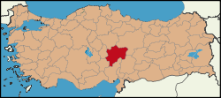

| Kayseri | ||
|---|---|---|
|  Kayseri'nin Türkiye'deki Konumu |
||
| Ülke | Türkiye | |
| Bölge | İç Anadolu Belgesi | |
| İdari Bilgiler | ||
| Büyükşehir Belediye Başkanı | Memeduh Büyükkılıç | |
| Vali | Şehmus Günaydın | |
| Genel Bilgiler | ||
| Yüzölçümü | 17,170 km^2 | |
| Nüfus | 1,389,680 | |
| Rakım | 1,054 m | |
| Alan Kodu | (+90) 352 | |
| Plaka Kodu | 38 | |
| Resmi Siteler T.C Kayseri Valiliği Kayseri Büyükşehir Belediyesi |
||
| Kaynak : Wikipedia Kayseri | ||
Kayseri Tarihçe
Hemen her köşesinde tarihi bir mekânla karşılaşabileceğiniz Kayseri, Anadolu’nun en eski yerleşimlerinden biri. Yaklaşık 6 bin yıllık geçmişinden günümüze kalan 60 tümülüs, 56 höyük, 20 yeraltı şehri ve 19 kaya yerleşiminin yanı sıra ören yeri, kaya kabartması, kale, kilise, cami, kümbet, türbe ve medrese gibi tarihi yapılar bunun en güzel kanıtları arasında. İnsanlık tarihinin mihenk taşlarından biri olan kent Asur, Hitit, Frig, Kimmer, Med, Pers, Kapadokya Krallığı, Roma, Bizans, Abbasi, Selçuklu, Danişment, Moğol, Eretna, Karaman, Dulkadiroğulları ve Osmanlı egemenlikleri döneminden kalan zengin eserlerle adeta bir açık hava müzesini anımsatıyor.
Şehrin görkemli geçmişini günümüze taşıyan belleği niteliğindeki Kültepe, 4 bin yıl öncesinden günümüze ulaşan Asur tabletleriyle biliniyor. Yörede Karahöyük (Karaev) olarak bilinen Kültepe, en parlak dönemini “Neşa” adıyla başkentlik yaptığı Hitit İmparatorluğu zamanında yaşadı.
Daha sonra Roma egemenliğine giren Kayseri, bu devirde antik kaynaklarda “Kapadokya’nın en büyük ve güzel şehri” sıfatıyla tanımlanır. Kapadokya Kralı Arkhelaos döneminde Roma İmparatoru Augustus şerefine Kaisareia adını alır. İS 4. yüzyıl başlarında Hıristiyanlığın önemli merkezlerinden biri olan kent, Piskopos Basilius sayesinde yeniden yapılanma sürecine girer. Bu dönem, keşiş hücreleri,şapeller, yeraltı şehirleri, kaya kiliseleri, manastırlar ve bazilikalar gibi dinsel yaşam alanlarının ortaya çıktığı bir zaman dilimine tekabül eder. Özellikle Yeşilhisar, İncesu, Develi, Kocasinan ve Melikgazi ilçeleri, Hristiyanlık dönemi eserlerin yaygın şekilde görülebileceği yerleşim bölgeleridir. Bizans hâkimiyetinin ardından bütün Anadolu’ya yayılan Arap akınlarından nasibini alan Kayseri, korkunç bir tahribata uğrar. Bu karanlık dönemden sonra kent 1071 yılında Selçuklularla birlikte Türklerin egemenliğine geçer. Bir dönem Anadolu Beylikleri’nin hüküm sürdüğü bölge, Fatih Sultan Mehmet’in fetih seferleri sonucunda Osmanlı İmparatorluğu'nun topraklarına katılır.